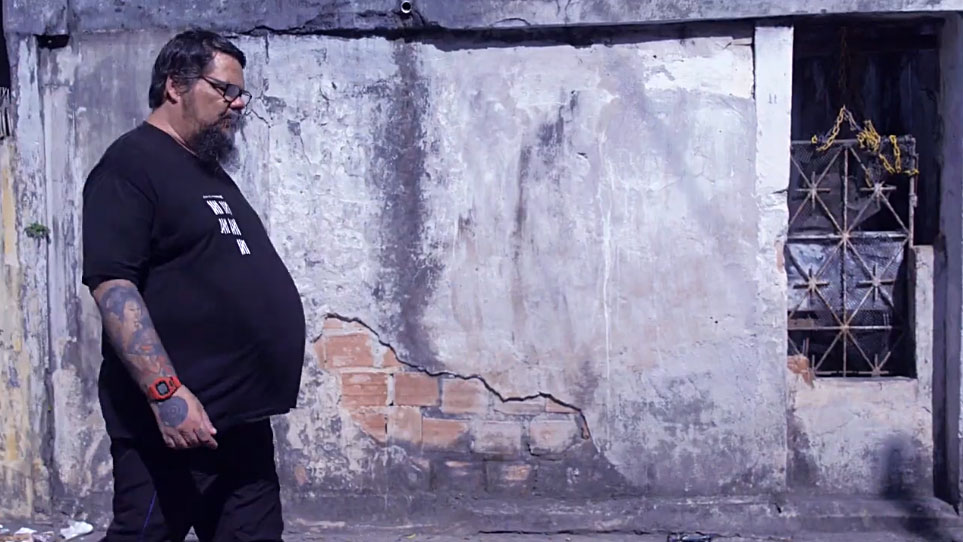
Creative Direction Case Study
Turning a Cultural Story into a Movement
Role
Creative Direction, Documentary Filmmaking & Digital Strategy
Scope
Storytelling • Film Direction • Branding • Content Strategy • Community Building
“Bahia Underground” is an independent documentary project centered on Rogério BigBross, a key figure in Brazil’s underground music scene.
The project was born without funding, media budget, or production structure — yet it carried strong cultural relevance and untapped narrative potential.
How to generate financial support for an unknown, unfunded documentary – transforming it into a living movement that attracts attention, builds trust, and secures resources.
And after partial crowdfunding success: how to launch a second campaign phase to fund accessibility features and festival submissions – without recurring budget.
I designed a storytelling-driven strategy combining documentary language, brand identity, and digital community building.
Building an authentic, human-centered story
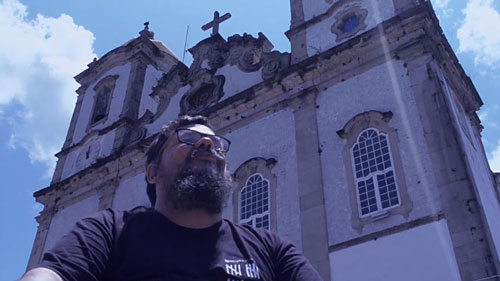
Real voices rising from the underground
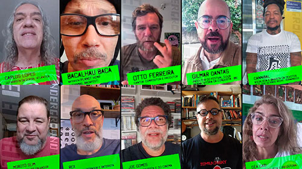
Using lean methods to maximize impact
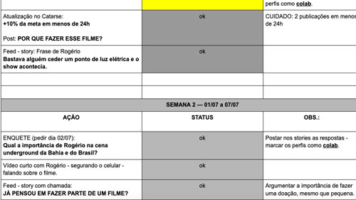
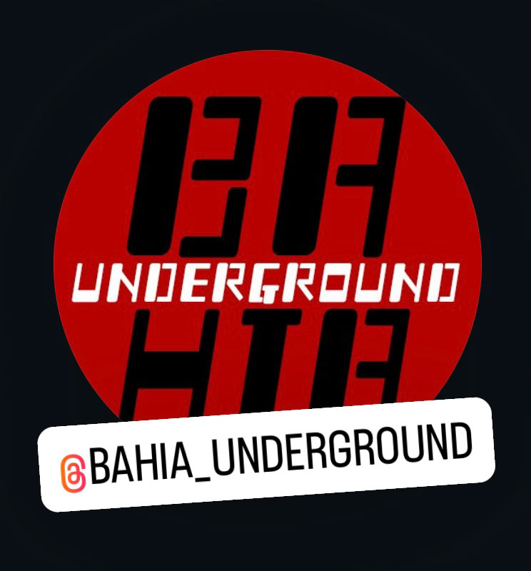
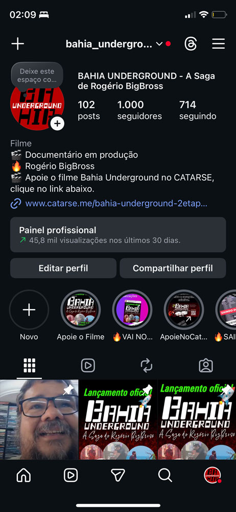
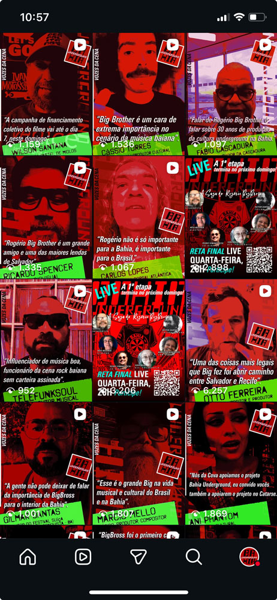
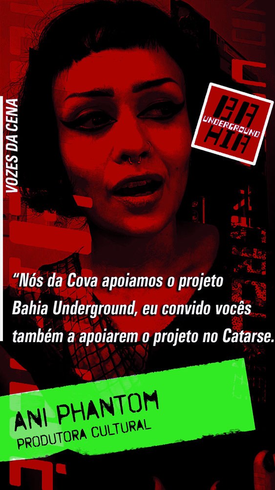
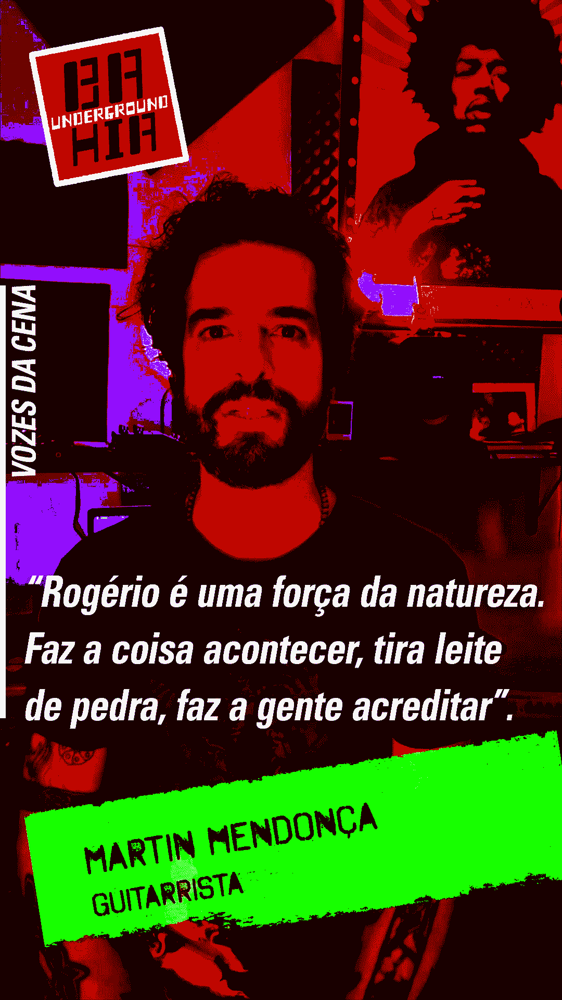
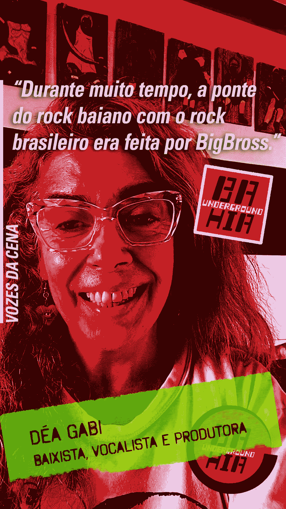
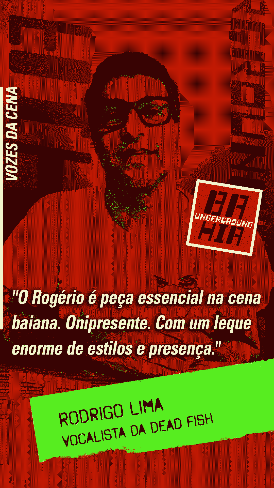
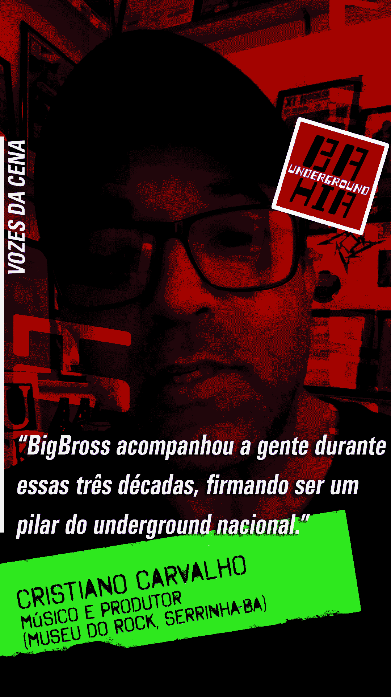
The official @bahia_underground Instagram profile became the project's central hub.
With an organic, no-ad strategy, it generated:
The second campaign phase is planned to fund accessibility features and festival entries – using the official website as a pitch tool. The website was designed and developed with UX and Product Design principles to demonstrate the project's potential to festival programmers.
A cultural initiative that evolved into an engaged community, organic growth, and the production of a 4K documentary.
When storytelling, identity, and community align, even projects with zero budget can generate real impact.
Concept • Direction • Storytelling • Film • Editing • Sound • Branding • Digital Strategy • UX • Content